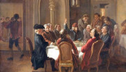

Intellettuali discutono in un salotto
L'Illuminismo ha avuto profonde conseguenze sociali, politiche e culturali, promuovendo il ragionamento
critico, riconoscendo i diritti individuali, favorendo la separazione tra Chiesa e Stato, influenzando idee
democratiche, contribuendo allo sviluppo scientifico e tecnologico, introducendo concetti di uguaglianza,
sottolineando l'importanza dell'istruzione pubblica e contribuendo alla formulazione dei diritti dell'uomo. Nei
circoli massonici, l'Illuminismo ha ispirato la promozione di valori come il ragionamento critico, la tolleranza,
la libertà individuale e l'umanesimo, sebbene la relazione tra i due sia complessa e variabile tra le diverse logge.